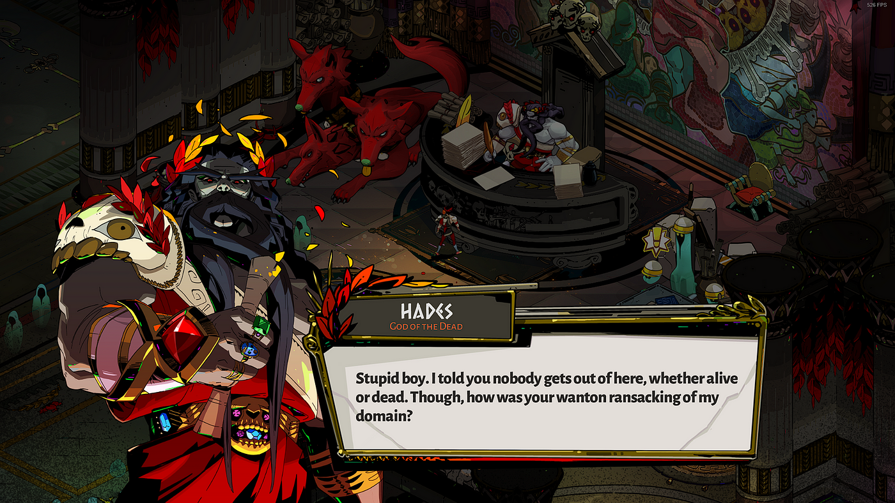

Hades
Joel Haddock Mar 12, 2024
For some reason, it took me a really long time to finally give in and play Hades.
Everyone was talking about how amazing it was, from the fluid action to the rich character stories. But I kept telling myself it wasn't for me.
I was wrong, of course. It's totally for me.
Hades is an incredible blend of fast, hack n' slash action with an overall roguelite structure centered on repeated attempts to escape the underworld.As Zagrius, the player starts with a handful of weapon options and a few support abilities. Making your way through the various stages of the underworld, a player fleshes out their build with a huge range of powers granted by the various gods. Play your cards right - and get a little lucky - and you can build up an incredible set of abilities that reinforce each other, turning you into a whirlwind of death and destruction in a multitude of ways.
By itself, that would be pretty fun.

Hades is never happy
Hades takes it a step further, adding a heaping pile of metaprogression on top of things. Each run earns you more resources to spend at the start of your next run, opening up new innate abilities, weapon powers, and all sorts of other things. Naturally, runs start to get easier, but players can even choose to handicap themselves for greater rewards.
Again, this is already a fantastic framework. But Hades takes it even further, doing something not a lot of roguelites do - it adds a ton of story to progress through as well.
Finding new ships in FTL
While the overarching story of Zagrius's escape has its own progression to work through (requiring multiple victories), all of his friends, foes, and family members have their own individual storylines a player can slowly develop across the span of many runs. So even if someone feels like they've finished the "main" part of the game, there's almost always more to come back and keep playing for.
Maybe, like me, you looked at Hades at first and thought it wasn't going to be the kind of gameplay for you. You might be right, but I'd still urge you to give it a try. Even if you stumble your way through, you will probably find something about you love.
That's why Hades is the best roguelite.
So What Is This?
Welcome to the Roguelite House, the place for all things roguelite.
If you don't know what a roguelite is, you should probably start here.
What're We Running Now?
- Balatro
- Loop Hero
Latest Posts
-
What Is A Roguelite?
Maybe you should start here.
-
Hades
Hades is the best Roguelite
-
Slay the Spire
Slay the Spire is the best Roguelite